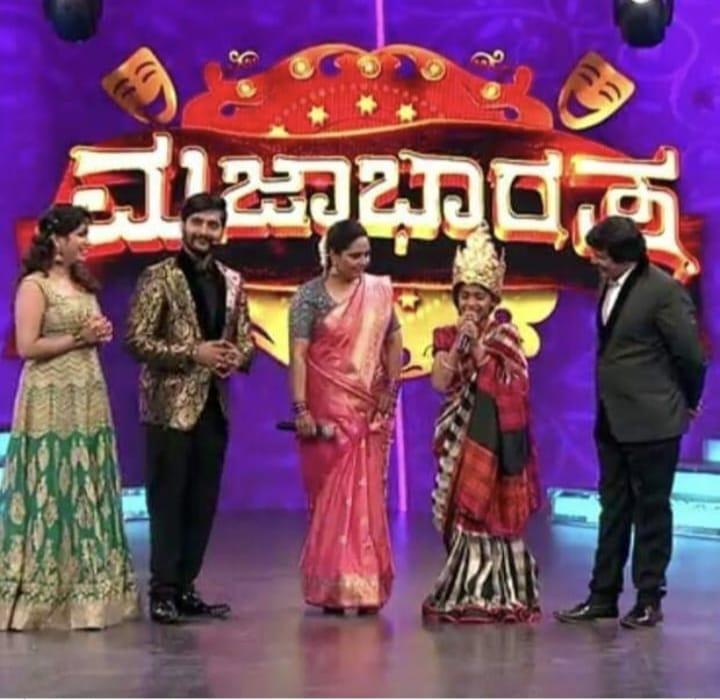
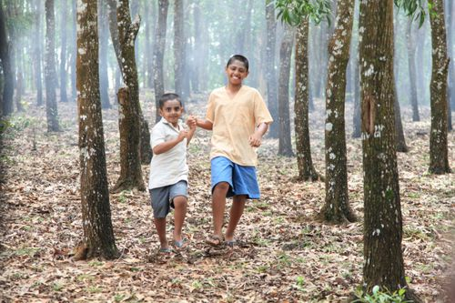

Played a pivotal tole called Loki in a serial called Kinnari which was being telecasted on Colours Kannada
Was a contestent of Majabharata Season 1 , a comedy reality show in Colours Kannada and was also awarded as the BEST PERFORMER from the legends of sandalwood ,S.Narayan Sor and Shruthi Ma'am

Played the protogonist role called Akshay in a movie called 1098 Save Childhood, which recieved the appreciation of the Education Minister Of Primary Schooling Shri.N.Mahesh sir.
Played a lead role called Appu in Ramana Savari,a vision of the great Girish Kasaravalli Sir, which also won the second place in Bangalore International Film Festival and also a State Award

DUBBING
A proffessional voice artist from past 9 years in the Kannada television and film industry
Dubbed for
Played the protogonist role called Akshay in a movie called 1098 Save Childhood, which recieved the appreciation of the Education Minister Of Primary Schooling Shri.N.Mahesh sir.
Played a lead role called Appu in Ramana Savari,a vision of the great Girish Kasaravalli Sir, which also won the second place in Bangalore International Film Festival and also a State Award


 Email: shettyayush@gmail.com
Email: shettyayush@gmail.com LinkedIn: linkedin.com/in/ayush
LinkedIn: linkedin.com/in/ayush GitHub: github.com/shettyayush96
GitHub: github.com/shettyayush96